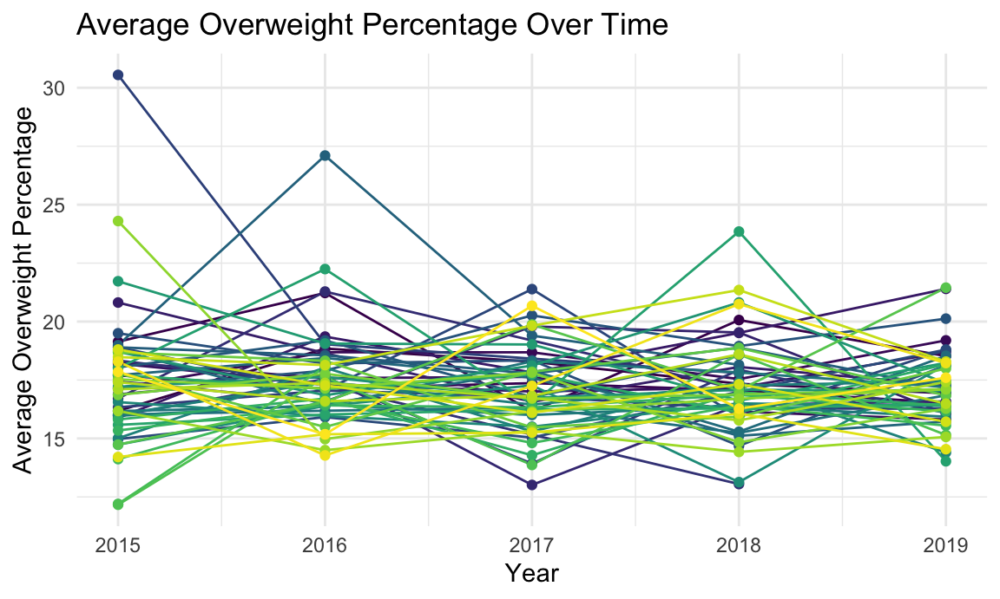

Overweight Percentage Changes Over Year
Firstly, we want to look at the county-level overweight percentage changes over years. We do that by calculating the county-level average overweight percent and plot results as a spaghetti plot. Legends are dropped to help visualization. 
The current visualization appears messy, making it challenging to see a clear trend. To enhance the clarity of the trend, a new plot depicting the average overweight percentage across counties over time has been created.
Upon examining two plots, the percentage of students classified as overweight in the state of New York remained relatively constant from 2015 to 2019. Despite apparent fluctuations in the depicted data, such as a surge in 2016 and a drop in 2017, these variations can be attributed to the confined range of the y-axis. Specifically, the values fluctuate within a limited span, ranging only between 16.7% and 17.3%.
County-level percent overweight/obese/healthy
Then, we want to compare each counties’ overweight, obesity, and healthy percentage. We did this comparison by plotting average percentage overweight/obese/healthy for each county as histograms.
| county | ave_overweight_percent |
|---|---|
| LEWIS | 20.43625 |
| ESSEX | 20.10000 |
| CORTLAND | 19.07819 |
| WASHINGTON | 19.06388 |
| OSWEGO | 19.02717 |
| county | ave_obese_percent |
|---|---|
| OSWEGO | 24.81957 |
| ST. LAWRENCE | 24.10043 |
| YATES | 23.42500 |
| FRANKLIN | 23.27104 |
| SENECA | 23.24516 |
| county | ave_healthy_percent |
|---|---|
| WESTCHESTER | 69.56456 |
| SCHUYLER | 69.32857 |
| PUTNAM | 66.51875 |
| TOMPKINS | 66.49099 |
| NASSAU | 66.02054 |
Analyzing the plots and tables reveals that Oswego ranks among the top 5 counties with the highest percentages of overweight and obese populations. Consequently, it is recommended that educational and health authorities explore counties with lower indices to glean insights on effectively managing this situation.
Elementary & Middle school overweight across county
Now, we want to dive deeper to each variable. We want to compare elementary school and middle/high school overweight percentages for each county.
Observing this plot reveals that, in the majority of counties, elementary school students exhibit a lower percentage of overweight compared to their middle school counterparts. As a suggestion, it is recommended to first adjust the school lunch menu to incorporate healthier options, possibly including more fiber. Additionally, middle school students should ensure sufficient exercise by dedicating more time or classes to physical education.

Sex and Overweight
What about sex? Does different sex affect students’ overweight percentage?
The plot indicates that the likelihood of female students having a higher percentage of overweight cases compared to male students is noticeable. This inclination may be influenced by a complex interplay of biological, behavioral, and socio-cultural factors. For instance, hormonal differences between males and females can affect the distribution of muscle and fat in their bodies. Therefore, it is suggested to incorporate additional biological education for students facing overweight issues to empower them to make informed choices and address their situation effectively.
Racial Group and Overweight
Upon reviewing the cleaned data, there is a hypothesis that various racial groups may exhibit distinct probabilities of experiencing overweight conditions. Therefore, our analysis will commence by examining the distribution of different racial groups among students for each year.
The pie charts reveal that approximately 60% of the student population is white, while around 20% identifies as Hispanic. There are smaller proportions of Asian, American Indian, and Black students. Following this, we generate plots to visualize the county-level average distribution of racial groups and the corresponding average percentage of overweight individuals.
From the aforementioned plot, it is noteworthy that certain counties with a higher proportion of White students exhibit a greater percentage of overweight individuals compared to others. For instance, in Essex County, where the student population comprises a substantial 97.3% White individuals, the average overweight percentage is also the highest at 22.6%. To further investigate this issue, scatter plots are subsequently generated to visualize the distribution of percent overweight versus each racial group.
In the five scatterplots presented above, a noticeable trend emerges where an increase in the percentage of Asian, Black, and Hispanic students is associated with a decrease in the percentage of overweight individuals. Conversely, there appears to be no distinct relationship between the percentage of American Indian students and the percentage overweight. Notably, as the percentage of White students increases, there seems to be an upward trend in the percentage of overweight individuals. This suggests a potential positive correlation between the number of White students and the percentage of overweight individuals. To delve deeper into this relationship, further exploration will be conducted using regression analysis.